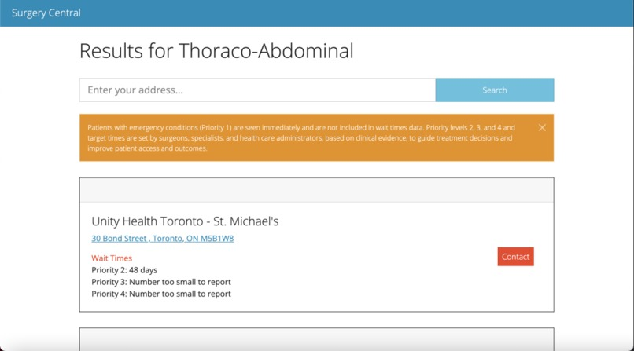
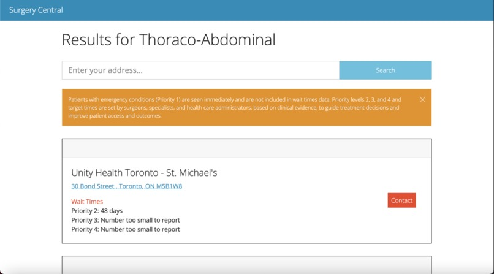

SEM:ANTICS
An AI-driven tool to improve written communication; create positive impressions & maintain professional relations.
Developed with a team of four in 36 hours for SheHacks 2023, SEM:ANTICS is a comprehensive platform that allows users to edit emails, store their past emails, and gives advice for students, managers, and employees to effectively learn to communicate to a professional standard. It gives tooltip recommendations for each email based on a data-set compiled of positive, negative and neutral habits that are used in their writing. Email writers can continually submit email drafts (receiving multiple pieces of feedback) until they complete a certified professional draft. SEM:ANTICS also records all changes after each draft writing, so after completion, the user can review it at any time and see how they have improved. SEM:ANTICS leverages Cohere's LLM models fine-tuned using a team-compiled database sourced from various professional blogs about professional email etiquette (e.g., Indeed, Glassdoor, University of Toronto).
 
